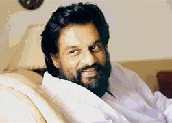

Music is generally defined as the art of arranging sound to create some combination of form, harmony, melody, rhythm, or otherwise expressive content.[1][2][3] Definitions of music vary depending on culture,[4] though it is an aspect of all human societies and a cultural universal.[5] While scholars agree that music is defined by a few specific elements, there is no consensus on their precise definitions.[6] The creation of music is commonly divided into musical composition, musical improvisation, and musical performance,[7] though the topic itself extends into academic disciplines, criticism, philosophy, and psychology. Music may be performed or improvised using a vast range of instruments, including the human voice. In some musical contexts, a performance or composition may be to some extent improvised. For instance, in Hindustani classical music, the performer plays spontaneously while following a partially defined structure and using characteristic motifs. In modal jazz, the performers may take turns leading and responding while sharing a changing set of notes. In a free jazz context, there may be no structure whatsoever, with each performer acting at their discretion. Music may be deliberately composed to be unperformable or agglomerated electronically from many performances. Music is played in public and private areas, highlighted at events such as festivals, rock concerts, and orchestra performances, and heard incidentally as part of a score or soundtrack to a film, TV show, opera, or video game. Musical playback is the primary function of an MP3 player or CD player and a universal feature of radios and smartphones. Music often plays a key role in social activities, religious rituals, rite of passage ceremonies, celebrations, and cultural activities. The music industry includes songwriters, performers, sound engineers, producers, tour organizers, distributors of instruments, accessories, and sheet music. Compositions, performances, and recordings are assessed and evaluated by music critics, music journalists, and music scholars, as well as amateurs.
He made his acting debut playing one of the main protagonists in the Malayalam film Cycle, which did well at the box office. He did his second movie role with his father in the movie Makante Achan.[citation needed] He writes the lyrics of most of his album songs and has also directed his own music videos.[citation needed] Vineeth won the AMMA Best Male Singer Award 2008 for his songs "Mampullikkavil" and "Jillu Jillu" and also the Best Male new face of the year 2008 by Asianet, for his role in Cycle.[citation needed] Vineeth wrote the script and Lyrics and debuted as director for the movie Malarvadi Arts Club with seven new young actors. He won the Asiavision award for the best debutant director for Malarvadi Arts Club. Thattathin Marayathu is the second movie in which he was the screenwriter, director and playback singer. His third movie Thira was released in 2013, in which he introduced his younger brother Dhyan Sreenivasan.
Kattassery Joseph Yesudas (/jeːʃud̪aːs/; born 10 January 1940) is an Indian playback singer and musician who sings Indian classical, devotional and film songs.[1] He is widely considered one of the greatest singers in the history of Indian music[2][3] and a cultural icon of Kerala.[4][5] Yesudas is estimated to have recorded more than 50,000 songs[6] in various Indian languages, including Malayalam, Tamil, Kannada, Telugu, Tulu, Hindi, Odia,[7] Bengali, Marathi as well as Arabic, English, Latin, and Russian, in a career spanning six decades.[8][9] He is often referred to as Gaanagandharvan (transl. The Celestial Singer).[10] Yesudas holds the record for singing 11 songs in different languages in a single day.[11] He has also composed a number of Malayalam film songs during the 1970s and 1980s. Yesudas won the National Award for the Best Male Playback Singer record eight times,[12] the Filmfare Awards South five times, and the State Award for the Best Playback Singer forty-three times, including awards given by the state governments of Kerala, Tamil Nadu, Andhra Pradesh, Karnataka, and West Bengal.[2] He was awarded the Padma Shri[13] in 1975, the Padma Bhushan in 2002, and the Padma Vibhushan (second-highest civilian award) in 2017 by the Government of India for his contributions towards the arts.[14] In 2005, he was honoured with the J. C. Daniel Award, Kerala government's highest honour for contributions to Malayalam cinema. In 2011 Yesudas was honoured with the CNN-IBN outstanding achievement award for his contributions in the music field. In 2006, he sang 16 film songs in four South Indian languages on the same day at AVM Studio, Chennai